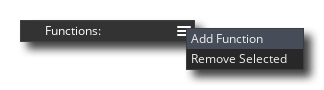

Se puede usar un paquete de extensión para agregar una cantidad de funciones y constantes adicionales a GameMaker Language (GML), o como una forma de transferir activos de juegos o incluso proyectos completos fácilmente entre personas. Si la extensión es para agregar funcionalidad adicional, entonces las funciones utilizadas pueden vincular su juego a SDK externos o código fuente escrito en otros idiomas (como Java para Android, por ejemplo), así como a GML nativo. 
Normalmente, las extensiones de terceros serán de GameMaker Marketplace y aquellas a las que se haya suscrito se mostrarán en la ventana de la Biblioteca de Marketplace y se pueden instalar desde allí, o haciendo clic derecho  en la carpeta de recursos de Extensiones y seleccione Agregar existente de mi biblioteca. Si no obtuvo su paquete de extensión de Marketplace, aún puede agregarlo a un proyecto haciendo clic nuevamente en el botón derecho
en la carpeta de recursos de Extensiones y seleccione Agregar existente de mi biblioteca. Si no obtuvo su paquete de extensión de Marketplace, aún puede agregarlo a un proyecto haciendo clic nuevamente en el botón derecho  la carpeta Extensiones en el árbol de recursos y esta vez seleccionando Agregar existente.
la carpeta Extensiones en el árbol de recursos y esta vez seleccionando Agregar existente.
Si tienes un *.GMEZ creado con una versión anterior de GameMaker Studio, puede agregarlos seleccionando el botón derecho del mouse  Opción de menú Importar archivo.
Opción de menú Importar archivo.
Para obtener más información sobre el uso y la creación de paquetes de extensión, consulte las siguientes secciones:
Una vez que haya agregado una extensión al árbol de recursos, debe darle un nombre y un número de versión y también establecer a qué plataformas desea exportarlo. Al desmarcar las plataformas seleccionadas, puede indicar a GameMaker Studio 2 no exporte la extensión como parte del ejecutable de esas plataformas. También debe asegurarse de que las propiedades de la extensión coincidan con las plataformas de destino y editar los destinos de exportación para los archivos de extensión según lo siguiente:
- Todos los objetivos: extensiones GML. Estas son extensiones hechas utilizando el lenguaje GameMaker (GML) y son compatibles con todas las plataformas de destino.
- Windows (Estándar, UWP, XBoxOne): puede usar archivos DLL de Windows (Dynamic Link Libraries).
- Mac OS: El destino de Mac OS puede usar los archivos estándar de DyLib para extensiones.
- Ubuntu (Linux): para el destino de Ubuntu, debe asegurarse de que su extensión use archivos SO.
- Html5: Estas plataformas pueden usar extensiones de JavaScript.
- Android: esta plataforma requiere una extensión que se escriba en Java o un SDK de Android Framework.
- iOS: las extensiones para esta plataforma están escritas en Objective C y requieren un archivo *.mm y *.h, o si usa Frameworks, un archivo nativo *.a precompilado.
- PlayStation: para PlayStation 3 o 4, sus extensiones deben ser archivos PRX, con cada objetivo que requiera un PRX diferente para cumplir con las especificaciones del objetivo (PS3 o PS4). Si está trabajando en una PSVita, la extensión debería ser SUPRX.
Dado que una sola extensión puede tener varios archivos asociados, es posible crear una única extensión para múltiples plataformas, en cuyo caso desea especificar todas las plataformas compatibles en el editor de extensiones principal (es decir, marque la casilla de verificación junto a ellas) y luego en la Las propiedades de archivos individuales para cada parte de la extensión, establecen la plataforma a la que se deben exportar esos archivos. Para cambiar la plataforma de destino para un archivo de extensión o marcador de posición específico, primero debe abrir las propiedades de la extensión (haga doble clic en
la extensión i el árbol de recursos o uso
y seleccione Abrir propiedades ), y luego, una vez en las propiedades de extensión, seleccione el archivo de recursos de la derecha que desea editar:
NOTA: Si está exportando al macOS o al destino de Ubuntu, puede configurar la opción "Descomprimir como archivo zip" para preservar los permisos de archivo para la extensión.
Una vez que hayas instalado tu extensión, puedes usar las funciones y constantes de la misma manera que lo harías con las funciones y constantes integradas que se usan en el lenguaje de GameMaker. Si su juego es multiplataforma (por ejemplo, está diseñado para ejecutarse en objetivos de Windows y Android ), entonces debe usar las constantes y funciones del sistema operativo para verificar la plataforma antes de llamar a funciones específicas de extensión para evitar problemas, por ejemplo:switch(os_type)
{
case os_android:
call_android_extension_function(x, y, z);
break;
case os_windows:
call_windows_extension_function(x, y, z);
break;
}Tenga en cuenta que para diferentes plataformas, sus extensiones pueden compartir nombres de funciones, por lo que si tiene una extensión con archivos distintos para (por ejemplo) abrir un mensaje para Windows y para Android, ambos archivos de extensión pueden compartir el mismo nombre de función siempre que sean Ambos configurados para exportar solo a sus respectivas plataformas.
Para crear una extensión, primero debes hacer clic derecho
Para agregar un archivo a la nueva extensión, debe hacer clic en el icono del menú y seleccione un archivo de marcador de posición o el archivo real que se requiere para la plataforma de destino:
Un marcador de posición "Genérico" es un archivo que puede ser de cualquier tipo, excepto los requeridos por las plataformas específicas (por lo que no hay archivos DLL o SO, por ejemplo), y no se utilizará excepto como un archivo "vinculador" para conectar un conjunto de funciones o constantes con la extensión dada (por lo general, solo se usa con Android extensiones de iOS y Android, que se explica en las secciones a continuación para esos objetivos). También puede agregar archivos de marcador de posición "GML" y "JS" para un uso más específico.
Normalmente, no necesitará usar marcadores de posición a menos que compile para iOS y Android, por lo que elegiría la opción Agregar archivos para agregar cualquiera de los siguientes archivos, dependiendo de la plataforma de destino para la que son:
- .gml: Este es un archivo creado solo con el lenguaje de GameMaker y es compatible con todas las plataformas.
- .js: Este es un formato de extensión de JavaScript y solo es compatible con los módulos de destino JS (HTML5).
- .dll: Este es un formato de extensión de biblioteca de enlace dinámico y solo es compatible con los objetivos de Windows, UWP y Xbox One (cada objetivo necesitará un archivo *.dll diferente compatible con sus especificaciones).
- .dylib: Este es el equivalente de Mac de una DLL y solo es compatible con el destino de Mac (no iOS).
- .so: Este es el equivalente de Linux de una DLL y solo es compatible con el destino de Ubuntu (Linux).
- .prx: Este es un formato de archivo para agregar la funcionalidad de destino de PS4 (cada objetivo necesitará un archivo *.prx diferente compatible con sus especificaciones).
Notará que no hay ningún tipo de archivo para Android ni iOS, ya que su configuración es ligeramente diferente. Más abajo puede encontrar explicaciones sobre cómo configurarlas, pero primero veamos cómo crear una extensión GML general para cualquiera de las plataformas de destino, ya que el proceso es el mismo para todas ellas.
Para empezar necesitas crear el archivo que se va a utilizar. Para una extensión GML, este sería un archivo de texto (guardado con el .gml extensión) y se formatearía algo como esto:
#define c_alice_blue
return make_color_rgb(240,248,255);
#define instance_create_colour
var i = instance_create_layer(argument0, argument1, argument2);
with (i)
{
image_blend = argument3;
}
return i;Como puede ver, comenzamos cada sección con una #define llamada, que en el ejemplo anterior se utiliza para definir dos funciones. No es necesario que proporcione campos de argumentos para las funciones, ya que esto se agregará más adelante, simplemente use el nombre define, el nombre de la función y siga adelante y agregue la GML para que coincida. Si estuviera escribiendo una extensión DLL o JS, el proceso sería similar pero en el idioma correcto para el formato del archivo de extensión.
Una vez que haya hecho eso, debe agregar el archivo a la extensión (explicada anteriormente) que encadenará una nueva ventana a las Propiedades de extensiones para las Propiedades de archivo:
Aquí seleccionará la plataforma de destino para la extensión (para GM los seleccionaría a todos), así como cambiar el nombre del archivo de extensión y establecer algunos otros detalles, que cubriremos en un momento. En primer lugar, sin embargo, queremos agregar nuestras constantes y funciones para que el usuario pueda llamar a la extensión desde el código de su proyecto. Para eso necesitas hacer clic en el botón de menú de funciones. y seleccione lo que necesite: 
La selección de Agregar función le permitirá agregar una función a la extensión a la que luego se puede llamar en GameMaker Studio 2 como lo haría con cualquiera de las funciones integradas. Se abrirá la siguiente ventana para que defina la función en:
En la imagen de arriba hemos llenado el editor de funciones con los detalles de la función. instance_create_colour que definimos en nuestro script de extensión GML (el editor de funciones no es solo para definir funciones GML y será el mismo para cualquier otro tipo de extensión). Puede ver que le hemos dado un nombre a la función, que es lo que llamaría cuando usara la función en su proyecto, y este nombre no tiene que coincidir con el que se usa en la extensión; puede configurarlo para lo que desee y luego use la opción Nombre externo para vincularlo al nombre real definido en la extensión. Debajo hay una sección para definir el texto de Ayuda, que es el texto que se usará en la ventana emergente de código completo y el texto de ayuda en la parte inferior del editor de código.
A continuación, puede definir el tipo de retorno, que puede ser un doble (valor de punto flotante del número real) o una cadena ; si la función externa no devuelve nada, esto no importa, y en virtud de lo cual se definen los argumentos según los cuales la función tomar.
Finalmente, agrega los argumentos (si los hay) que la función puede tomar. Los argumentos pueden ser dobles o cadenas, y puede agregarlos haciendo clic en el botón Agregar
y eliminarlos haciendo clic en el botón Eliminar
. Si su función puede tomar argumentos variables, también debe asegurarse de marcar la casilla de verificación Argumentos de longitud variable en la parte inferior.
NOTA: Si está creando un Windows dll archivo y tiene más de cuatro argumentos, todos los argumentos deben ser del mismo tipo.Una vez que haya hecho todo eso, entonces la función está lista para ser utilizada en un proyecto y se mostrará en modo autocompletado y también estará codificada por colores. Las funciones definidas también se pueden configurar como funciones iniciales o funciones finales, lo que significa que se llamarán automáticamente cuando el juego comience (Init) y cuando el juego termine (Final).
¡IMPORTANTE! Todas las plataformas admiten la llamada a la función Init, pero no todas las plataformas realizarán la llamada a la función Final. Esto se debe a que ciertas plataformas simplemente cerrarán la aplicación sin dar aviso ni tiempo para que se llame a esta función. Las plataformas que se ven afectadas por esto son: iOS, Android, HTML5, PlayStation y XboxOne.
La otra opción que tienes es crear una macro. Una macro puede ser un valor constante o un fragmento de código único (para obtener más información sobre las macros, consulte aquí ). Por ejemplo, podríamos eliminar la función definida de nuestro ejemplo de extensión GML anterior para el color c_alice_blue y convertirlo en una macro en su lugar. Para hacer una macro, simplemente haga clic en el botón Macros en la ventana Propiedades de la extensión:El editor aquí es bastante autoexplicativo: usted da el nombre de la macro / constante y el valor, o una línea corta de código. Tenga en cuenta que si la macro es una línea de código, se evaluará cada vez que se llame a la macro.
Cuando trabaje con múltiples plataformas de destino, vale la pena señalar que puede crear una sola extensión con un solo conjunto de funciones / macros que funcionará en todas las plataformas. Esto se logra agregando solo una de las bibliotecas de enlaces a su juego como una extensión y colocando las otras en la lista de archivos proxy de la ventana Propiedades de la extensión. Por ejemplo, supongamos que tiene una extensión de Windows con la dll "Haggis.dll". Simplemente replicaría esta dll como Mac DyLib, nombrándolo "libHaggis.dylib" y asegurándose de que los nombres de las funciones internas coincidan con los de la dll original de Windows. Este DyLib luego se agregaría a los Archivos Proxy y se establecería para exportar cuando el juego se ejecute en el objetivo de Mac, y GameMaker Studio 2 usará automáticamente cuando se llame a las funciones de extensión.
Para agregar un archivo proxy, simplemente haga clic en
Haga clic en el botón en la ventana Propiedades de la extensión para buscar la extensión y busque la ubicación del archivo. Una vez que se agrega, es posible que deba cambiar el destino de la extensión al módulo apropiado, y la próxima vez que ejecute su juego, se incluirá como un proxy para esa plataforma. También puede eliminar archivos proxy haciendo clic en
botón, que eliminará el último en la lista cada vez que presione.
Una vez que haya agregado sus archivos proxy, se almacenarán en el YYP de su juego, en la carpeta Extensiones (puede encontrarlas fácilmente haciendo clic con el botón derecho)
Es muy importante que sus archivos proxy sigan las convenciones de nomenclatura que se enumeran a continuación, ya que GameMaker Studio 2 analizará estos nombres y asignará el módulo de destino para el archivo de acuerdo con su extensión y nombre, y vinculará los archivos automáticamente para usted. Si no sigue estas convenciones, es posible que su juego no funcione en tiempo de ejecución, ya que GameMaker Studio 2 no podrá determinar qué archivo usar o no cargará el archivo correctamente.
Las convenciones de nomenclatura para cada plataforma de destino se dan a continuación:
Plataforma Los nombres Windows <Nombre>.dll. Linux <Nombre>.so, lib <Nombre>.so, <Nombre> _linux.so, lib <Nombre> _linux.so Mac OS X <Nombre>.dylib, lib <Nombre>.dylib HTML5 <Nombre>.js PS4 <Nombre>.prx, lib <Nombre>.prx, <Nombre> _ps4.prx, lib <Nombre> _ps4.prx Xbox One <Nombre> _xboxone.dll Usando las convenciones anteriores, cambiaría la parte <Nombre> por el nombre del archivo base para el que está agregando los archivos proxy.
Para crear una extensión para Android tienes que hacerlo en dos partes. La primera parte sería agregar la extensión, junto con los archivos requeridos, etc... y la segunda, crear las funciones y las macros / constantes que requiere la extensión. Las funciones y constantes se agregan utilizando archivos de marcador de posición para agruparlos, por lo que debe agregar un marcador de posición y luego definir las funciones y macros como se explica en la sección anterior. Para agregar el resto de los archivos, primero debe marcar la casilla de verificación de Android en la sección Características adicionales del editor:
Aquí le damos los siguientes detalles:
- Nombre de clase: Su extensión puede tener varias clases, con cada clase tiene sus propias funciones y constantes, por lo que debería darle un nombre que refleja su propósito.
- Permisos de Android: Aquí puede agregar cualquier permiso adicional que requiera su extensión. Los permisos dependerán completamente del uso que tenga la extensión, por lo que debe consultar la documentación suministrada por Google para la plataforma Android o, si está utilizando un SDK de terceros, la documentación que acompaña al SDK. Para agregar un nuevo permiso debe hacer clic en el
- Inyectar a las dependencias de Gradle: aquí puede agregar cualquier código adicional que deba inyectarse (agregarse) en las dependencias de compilación de Gradle.
- Inyectar a Android Manifest.xml Manifest: aquí se configura cualquier código adicional para que se inyecte (agregue) al archivo XML de Android Manifest cuando su juego esté diseñado para prueba o lanzamiento final. Asegúrese de revisar esto (y sus permisos) cuidadosamente antes de enviar cualquier juego a la tienda, ya que la configuración incorrecta hará que su juego falle para el envío.
- Inyectar en la Android Manifest.xml: aquí se configura cualquier código adicional para ser inyectado (agregado) al archivo XML del manifiesto de Android bajo el encabezado de la aplicación cuando el juego está diseñado para pruebas o lanzamiento final. Asegúrese de revisar esto (y sus permisos) cuidadosamente antes de enviar cualquier juego a la tienda, ya que la configuración incorrecta hará que su juego falle para el envío.
- Inyectar a Android Manifest.xml RunnerActivity: aquí se configura cualquier código adicional para ser inyectado (agregado) al archivo XML de Android Manifest bajo el encabezado RunnerActivity cuando su juego está diseñado para pruebas o lanzamiento final. Asegúrese de revisar esto (y sus permisos) cuidadosamente antes de enviar cualquier juego a la tienda, ya que la configuración incorrecta hará que su juego falle para el envío.
Una vez que haya configurado esto correctamente, deberá agregar los archivos necesarios para que su paquete de extensión funcione. Para hacer esto, debe hacer clic en los botones en la parte inferior, ya sea Agregar SDK o Agregar fuente y luego buscar los archivos que desea agregar. Los archivos agregados se almacenarán en el directorio de origen de Android junto con su extensión. Puede abrir esta ubicación en cualquier momento haciendo clic derecho
Para obtener más información sobre la creación de extensiones de Android, consulte la Base de conocimientos de YoYo Games.
Para crear una extensión para iOS tienes que hacerlo en dos partes. La primera parte sería agregar la extensión, junto con los archivos requeridos, etc... y la segunda, crear las funciones y las macros / constantes que requiere la extensión. Las funciones y constantes se agregan utilizando archivos de marcador de posición para agruparlos, por lo que debe agregar un marcador de posición y luego definir las funciones y macros como se explica en la sección anterior. Para agregar el resto de los archivos, primero debe marcar la casilla de verificación iOS en la sección Características adicionales del editor:
Aquí le damos los siguientes detalles:
- Indicadores de vinculador / Indicadores de compilador: algunos marcos y SDK de terceros requieren la adición de indicadores de vinculador adicionales y indicadores de compilador para el trabajo que se pueden especificar aquí (consulte la documentación que acompaña al SDK o marco en cuestión para obtener más detalles).
- Nombre de la clase: su extensión puede tener varias clases, cada una con sus propias funciones y constantes, por lo que debe darle un nombre que refleje su propósito
- Nombre de la clase del delegado de la aplicación: El nombre de su clase de delegado de la aplicación personalizada. Al establecer esto, la extensión puede anular / extender la funcionalidad de la aplicación central. Para usar esta característica necesitas hacer lo siguiente:
Para asegurarse de que su extensión funcione con cualquier otra extensión que utilice delegados de aplicaciones personalizados, debe llamar a cualquier método de clase base desde métodos sobrescritos en su clase secundaria. Antes de llamar al método de superclase, debe asegurarse de que esté implementado en la jerarquía de clases para evitar errores, por ejemplo:
- Asegúrese de que los archivos de origen del delegado tengan el mismo nombre que la clase del delegado (por ejemplo, @interface MyCustomAppDelegate debe definirse en " MyCustomAppDelegate.h ")
- Añade el ${YYExtAppDelegateIncludes} variable de entorno en la parte superior del archivo de encabezado de delegado de la aplicación. Esto se reemplazará en tiempo de compilación con los archivos de inclusión relevantes para la clase de delegado principal.
- Utilizar el ${YYExtAppDelegateBaseClass} variable de entorno como la clase base para su aplicación personalizada delegado. Esto se reemplazará en tiempo de compilación con la clase de delegado base correcta.
- (BOOL)application:(UIApplication *)application willFinishLaunchingWithOptions:(NSDictionary *)launchOptions
{
// Check if any superclasses implement this method and call it
if([[self superclass] instancesRespondToSelector:@selector(application:willFinishLaunchingWithOptions:)])
return [super application:application willFinishLaunchingWithOptions:launchOptions];
else
return TRUE;
}- Marcos de sistema: aquí puede agregar cualquier marco de sistema iOS a su extensión. Estos se añaden haciendo clic en el
- Inyectar a Info.plist: Aquí puede agregar cualquier código para ser inyectado en el info.plist expediente.
- Paquetes y marcos de terceros: esta sección es para agregar marcos de terceros y paquetes de SDK. Al igual que con los trabajos de marco del sistema, haga clic
Si a su extensión se le han agregado marcos de sistema o marcos de terceros, estos se mostrarán en la ventana Propiedades de la extensión, cada uno con una casilla de verificación al lado. Si marca la casilla de verificación, está habilitando el enlace débil, lo que es útil si necesita "anular" cualquier símbolo de la biblioteca incluida con su propio valor, pero se debe tener en cuenta que al hacerlo se ralentizará el enlace.
Para obtener más información sobre la creación de extensiones de iOS, consulte la Base de conocimientos de YoYo Games.


Extensiones de terceros para YoYo Games
Las versiones anteriores de GameMaker tenían muchas funcionalidades de terceros integradas, pero esto era ineficiente y difícil de mantener, ya que si un tercero cambiaba alguna funcionalidad específica, entonces todo el IDE y el tiempo de ejecución de GameMaker tendrían que actualizarse. Por lo tanto, las versiones actuales han adoptado el uso de paquetes de extensiones para agregar soporte de terceros a sus juegos. Esto significa que puede agregar solo las funciones adicionales que necesita y que incluso puede adaptarlas y editarlas para satisfacer sus necesidades específicas.
La mayoría de estas extensiones se descargarán e instalarán cuando seleccione una Opción de juego específica (como Facebook o Google Ads, por ejemplo), pero puede encontrar más información sobre ellas en los siguientes artículos de la Base de conocimientos de YoYo Games:
Puede encontrar las propias extensiones en la siguiente página de Marketplace:
Tenga en cuenta que estas extensiones vienen con una demostración y un archivo de ayuda que explica cómo usarlas y, por lo tanto, sus funciones no están cubiertas en el manual.